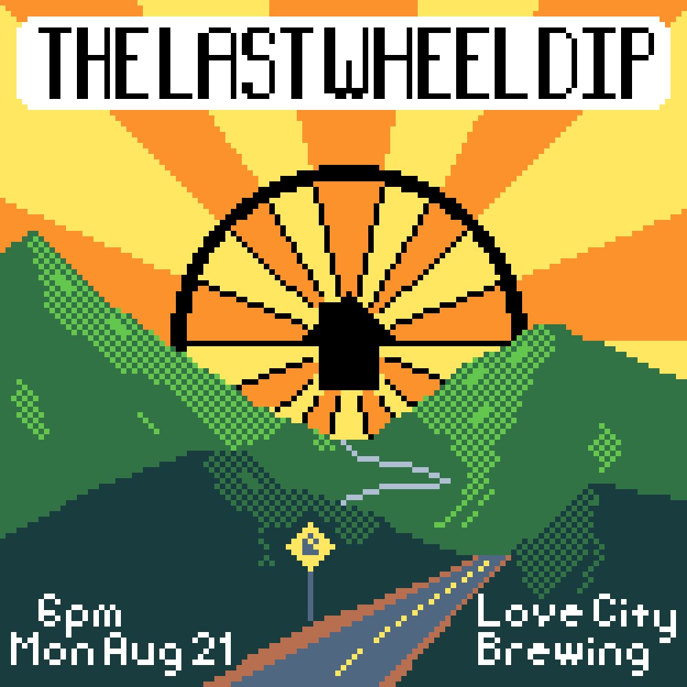

Last updated: Sat Jul 29 2023 | Permalink | RSS
A low-color pixel art illustration of a road going off into the mountains and on the horizon is a sunset where the sun is the Bike & Build logo, a bicycle wheel with a home icon at the hub. Text reads 'The Last Wheel Dip; 6pm Mon Aug 21 [2023]; Love City Brewing'
A pixel art poster I made advertising a party in Philly to acknowledge Bike & Build 's last ever trip ending and to celebrate with alumni and share trip stories.
Thank you for reading! Please consider supporting this blog.